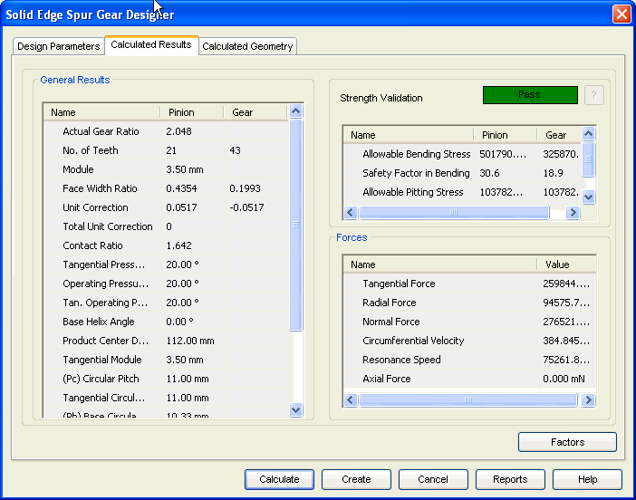

Spur Gear Calculated Results tab
The Calculated Results tab provides the options you use to view results of calculation.

General Results
Displays the input provided for calculation and a few general results for the gear and pinion.
Strength Validation
Displays the overall performance of the gear in terms of Pass/Fail. You can also review the allowable stresses of the gear displayed in this area.
Forces
Displays the results related to load carrying capacity of the gear.